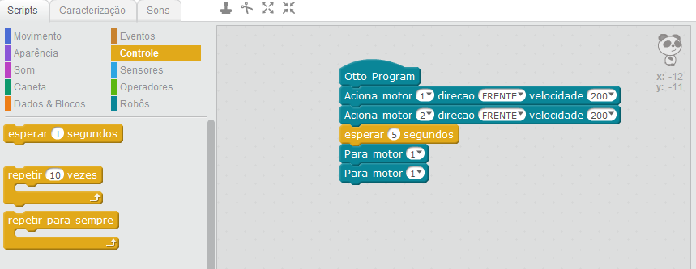
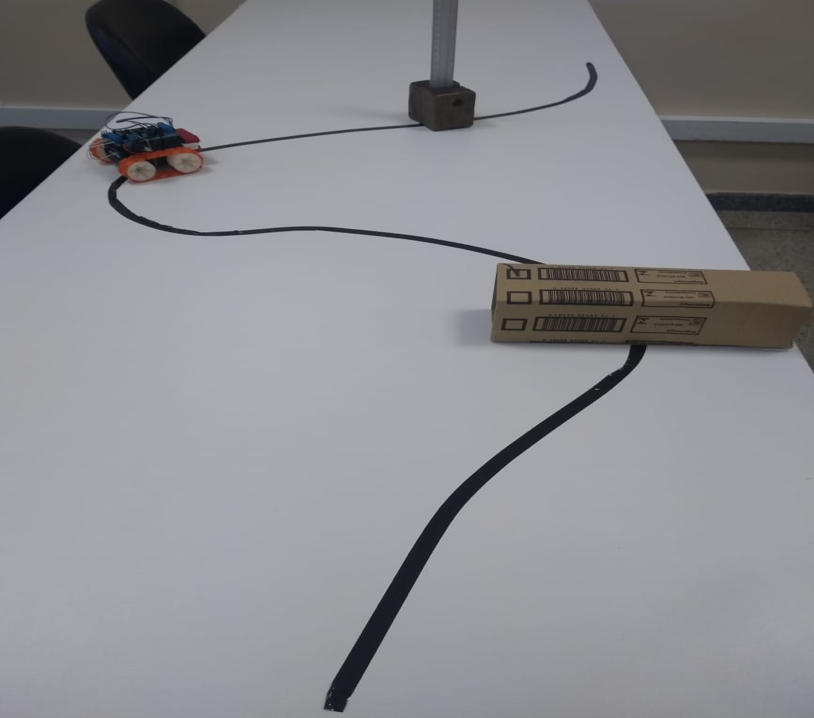
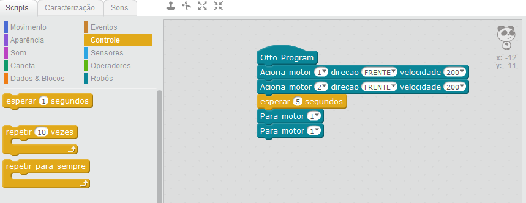
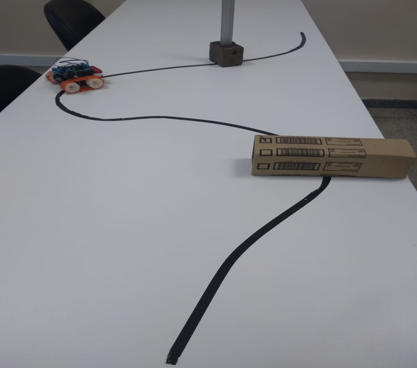

Robotique éducative
 



Description
SOUZA, A. C. L. L’utilisation du SMARS pour l’enseignement des mathématiques : une proposition à faible coût. 2019. 63 f. Thèse (Doctorat en Mathématiques) – Unité Académique Spéciale de Mathématiques et Technologie, Université Fédérale de Goiás – Régionale Catalão, Catalão – GO.
Informations
- Durée : 12 mois
- Nombre de personnes impliquées : 5
- Type : Projet universitaire
Objectifs
Objectif général : L’objectif général de ce projet de recherche était de présenter une proposition de robot destinée à l’application de la robotique éducative, en mettant l’accent sur une solution à faible coût.
Objectifs spécifiques :
- Élaborer un modèle de référence afin de faciliter l’apprentissage de la programmation du robot en contexte scolaire.
- Développer une programmation de base adaptée à un usage pédagogique.
- Concevoir des activités pédagogiques utilisant le robot pour l’enseignement des mathématiques.
- Adapter des activités initialement conçues avec des robots Lego au robot SMARS.
Contexte et question de recherche
De nombreux outils technologiques permettaient déjà aux enseignants d’adapter leurs pratiques pédagogiques et d’intégrer de nouvelles méthodes favorisant le processus d’enseignement-apprentissage, tant en mathématiques que dans d’autres disciplines, en encourageant une approche interdisciplinaire. Dans ce contexte, la robotique éducative, en tant qu’outil suscitant l’intérêt et l’engagement des élèves, avait acquis une importance croissante.
Ce projet s’inscrivait dans une démarche de recherche qualitative et visait à répondre à la question suivante : Quels sont les avantages de l’utilisation du robot SMARS dans l’enseignement des mathématiques ?